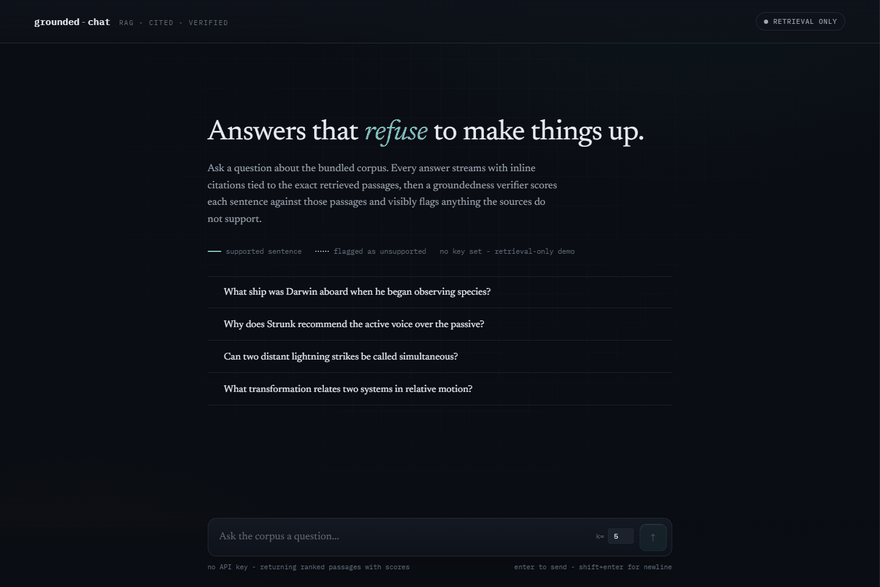
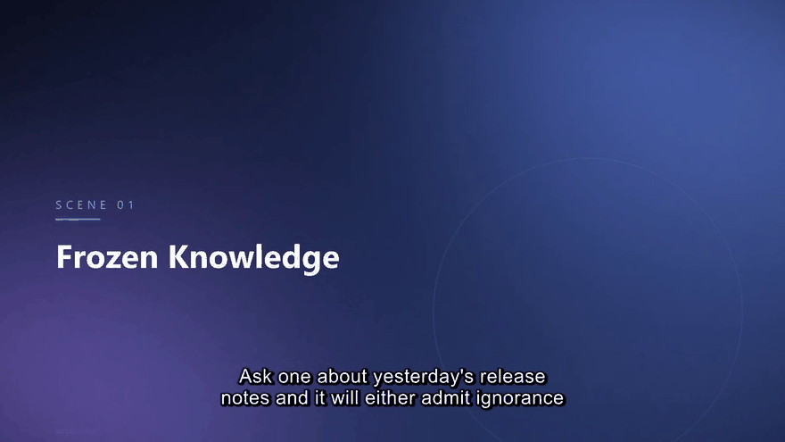

Melbourne, Australia · Remote
LaurinLin.
I build AI systems that actually ship.
Freelance engineer working on AI integrations, LLM and agent systems, workflow automation, and AI-video pipelines. End to end, tested, and running — not slideware.
Plate 00 — live_demo / the network that learns you. A real neural network — not a video. It is learning your cursor right now: forward passes and SGD weight updates, live in this browser, predicting 300 ms ahead. Move to stir the field; click open canvas to inject data and briefly double the training rate. A real neural network backs this hero. Your system prefers reduced motion, so it is shown as a single static forward pass — nothing animates or trains.
- nn.loss
- —
- nn.sgd_steps
- —
- tests
- 233 / 233
Services
-
AI & LLM integration
Chat · Agents · RAGWire Claude, GPT, or Gemini into your product — chatbots, agents, RAG over your docs, structured output, tool use, cost control.
-
Workflow automation
Pipelines · UnattendedTurn a manual process into an unattended pipeline: ingest, LLM logic, and delivery, with graceful failure handling and clean logs.
-
AI-video automation
Short-form · GenerationAuto-editing and generation pipelines for short-form video — cuts, hooks, captions, pacing — no manual edit per clip. See script2video for the assembly layer.
-
Sites & deployment
Static · Tested · LiveStatic sites deployed cleanly on GitHub Pages, Netlify, or Vercel, with HTTPS, forms, fonts, SEO, and end-to-end testing before handoff — this site is one.
Things I've built


Full-stack RAG chat that refuses to make things up — streaming answers with inline citations and a groundedness verifier that flags unsupported claims.
View repository ↗Automated lead-gen pipeline: pulls listings, scores each with an LLM, drafts tailored proposals.
View repository ↗Multi-LLM consensus framework — voters deliberate in parallel with weighted voting and veto rules.
View repository ↗Iterative prompt optimizer that hill-climbs a prompt against labeled examples and keeps only real gains.
View repository ↗Read-only MCP server exposing screenshots, OCR, and change detection to AI agents.
View repository ↗Markdown script to narrated, captioned video in one command — neural TTS with word-accurate timings and deterministic ffmpeg assembly.
View repository ↗Full index — github.com/ssh071102-code
A grounded AI assistant on your documents.
Two weeks, fixed price. Every answer cites its source page — or it refuses and takes a message. No invented prices, no invented policies. Delivered with a 20-question eval report you run yourself: the final payment is only due after it passes.
-
Paid Pilot
$1,000–1,500 · 2 weeksOne document set, one channel, the full eval report. For founding clients — the whole amount is credited toward CORE if you upgrade.
-
Starter
$1,500–2,500 · 2 weeksMulti-channel (web + WhatsApp, subject to Meta approval), lead capture, and handover docs your team owns.
-
Core
$3,000–5,000 · fixed scopePrivate data intake (NDA, client-side hosting available), integrations, and the eval harness handed over to your team.
-
Retainer
$1,500–3,000 / monthContent updates, eval monitoring, and one to two new workflows a month once the assistant is live.
Not sure yet? Ask for a 90-second video of it answering questions on your own documents — free, no call needed. And if a $99/mo template platform already covers your case, I'll tell you so.
Let's build something.
Tell me what you're trying to ship. I reply within a day, and I'm happy to start with a small fixed-scope pilot so you can see the work risk-free.
- Responsewithin a day
- First stepsmall fixed-scope pilot
- TimezoneMelbourne (AEST)